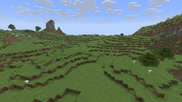
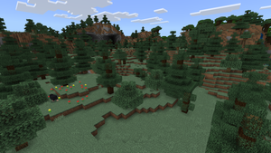
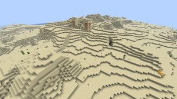
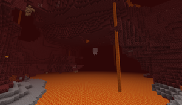
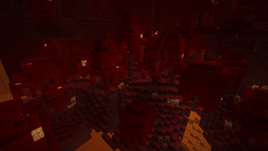
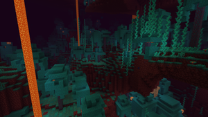

Plains
Plains are mostly flat biomes covered with grass and flowers.
Minecraft contains many different biomes, each with its own environment, terrain, structures, and mobs.

Plains are mostly flat biomes covered with grass and flowers.

There are different types of forests in Minecraft. However, all of them provide players with plenty of wood.

Deserts are dry biomes filled mostly with sand. Players may find cacti, dead bushes, and desert structuresin the desert.

Nether Wastes are the most common biome in the Nether. They are covered in netherrack and are home to many dangerous mobs.

Crimson Forests are red-colored biomes filled with crimson trees. Many hostile mobs can be found in this biome.

Warped forests are blue Nether biomes filled with warped trees. Endermen are most commonly found here aside from the end.